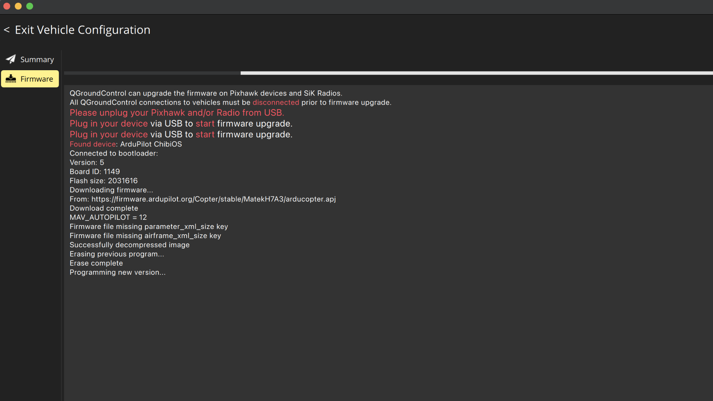
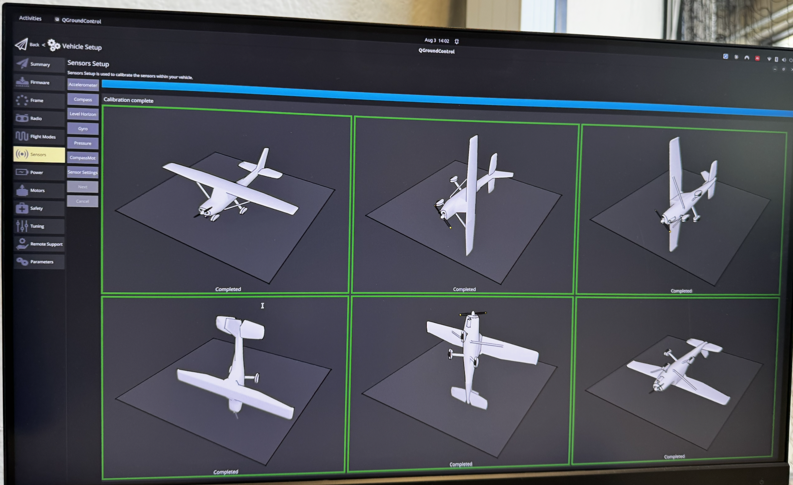

QGroundControl & Matek H7A3-SLIM Setup
Official ArduPilot Documentation
For comprehensive details on all calibration and setup steps, we highly recommend referencing the official ArduPilot Hardware Configuration Guide.
1. Board & Firmware Identification
Connecting the board to QGroundControl via USB-C and reading the MAVLink Console boot log confirmed:
This is a Matek H7A3-SLIM flight controller (STM32H7A3RIT6 MCU) running ArduCopter (ArduPilot) — not PX4. It has no built-in compass and no built-in current sensor.
2. Connecting to QGroundControl
- Install QGroundControl from qgroundcontrol.com if not already installed.
- Connect the flight controller via USB-C directly to the computer (not through a hub).
- QGC auto-connects within a few seconds — connection icon (top-left) goes from "Not Ready" once a link is established.
- Gear icon (Vehicle Setup) → Summary shows live Firmware Version, Vehicle Type, and Frame status.

3. ArduCopter Configuration Checklist
Do all of this connected via USB with props off, vehicle on a stand:
- Frame class & type — Vehicle Setup → Frame. Must match physical motor layout exactly.
- Accelerometer calibration — First, since the flight controller is mounted upside down on the frame, go to Vehicle Setup → Sensors → Autopilot Rotation and select
Roll180(this updates theAHRS_ORIENTATIONparameter under the hood). Then proceed with the Accelerometer (6-position capture) calibration.
- Compass calibration — Vehicle Setup → Sensors → Compass (only if an external compass is added; this board has none built-in).
- Radio calibration — Vehicle Setup → Radio (after channel order is fixed per section 7).
- Flight modes — assign Stabilize / AltHold / Loiter / RTL to switch positions.
- Battery monitor & failsafes — Vehicle Setup → Power (monitor type, cell count, voltage calibration) and → Safety (battery + RC-loss failsafe actions).
- ESC calibration — only needed for standard PWM ESCs, not DShot.
- Motor direction test — Vehicle Setup → Motors → Motor test, props off, confirm correct spin order/direction per Frame Type.
- Safety switch — press/hold hardware safety button if present; confirm all pre-arm messages clear before arming.
- First flight — Stabilize mode, brief hover, then AltHold hover 30s hands-off, then AutoTune via an assigned Aux switch.
4. GPS & Compass Setup (GEP-M10 / M9N)
If you are using a GPS module like the GEP-M10 or M9N, you will need to configure the serial port and calibrate the external compass (since the Matek H7A3-SLIM has no internal compass).
Parameter Configuration
Since the GPS is wired to UART3, ensure the following parameters are set in QGroundControl (Vehicle Setup → Parameters):
* SERIAL3_PROTOCOL = 5 (GPS)
* SERIAL3_BAUD = 115 (115200 baud is standard for M10; M9N may use 38 or 115. ArduPilot usually auto-detects this).
* GPS_TYPE = 1 (Auto - ArduPilot will probe for the U-blox protocol).
Compass Calibration
- Navigate to Vehicle Setup → Sensors → Compass.
- Because the flight controller has no built-in compass, you should only see one compass listed (the external one on the GPS module via I2C).
- Ensure the compass is enabled (
Use Compassis checked). - Orientation: Modern ArduPilot versions (like 4.7.0) can auto-detect the compass orientation during calibration. If auto-detect fails, you may need to manually set
COMPASS_ORIENT(common values for GEP modules areROTATION_NONE,ROTATION_YAW_90, orROTATION_YAW_270depending on how the arrow on the GPS puck is aligned with the drone's nose). - Click OK to start the calibration.
- Slowly rotate the drone around all of its axes (pitch, roll, yaw, and upside down) until the progress bar completes and turns green.
5. Troubleshooting Notes From This Session
| Symptom | Cause / Fix |
|---|---|
| "PreArm: Battery 1 low voltage failsafe" despite battery showing charged | Battery monitor not calibrated, or no real battery connected (USB-only power) — configure Vehicle Setup → Power and connect an actual flight battery. |
| Receiver LED completely dark after wiring | FC powered by USB only — 5V BEC pad stays unpowered until a battery is connected via Vbat. |
| Throttle stick moves "Roll" field in QGC | Transmitter channel order (TAER) doesn't match ArduPilot's expected order (AETR) — fix via Mixer page or RCMAP parameters. |
| Need to bypass a specific pre-arm check (e.g. compass) for bench testing | QGC Parameters → search ARMING_CHECK → uncheck the specific check. Not recommended to leave disabled for actual GPS-mode flight. |